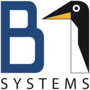
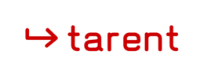

FrOSCon
Germanys largest Free and Open Source Software Conference
Don't listen to the Guys from "Cheminitzer Linuxtage" :)
Created by Heiko Borchers with reveal.js
Summary
- Introduction
- Who am I
- What is FrOSCon?
- Time and Date
Introduction
About me
- Systems/Network Engineer Trainee at University Duesseldorf
- Former Bachelor Student at University of Bonn
- Three Years as Software Developer CENs and BonnEconLab
Who is FrOSCon
- (Second) largest Open Source Conference in Germany
- Depends on who you ask, Cheminizer Linuxtage might be bigger
- Organized by the "Fachbereich Informatik" and the FrOSCon e.V.
- And a lot of "family" and friends who help every year
What is FrOSCon 1/2
- First Conference was in 2006
- This Year FrOSCon 13
- 140+ talks on two Days
- ~8-10 workshops
- big social event saturday evening
What is FrOSCon 2/2
- DevRooms for projects
- Open Source project exibition with
- 60+ exhibitors
- 2000+ visitors
- Last but not least: bouncycastle and ballpit (open for all ages)
Partners
- Amazon Development Center

- B1 Systems GmbH
- myLoc managed IT AG
- OTRS AG
- Safewrd Ventures OÜ
- tarent solutions GmbH